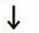
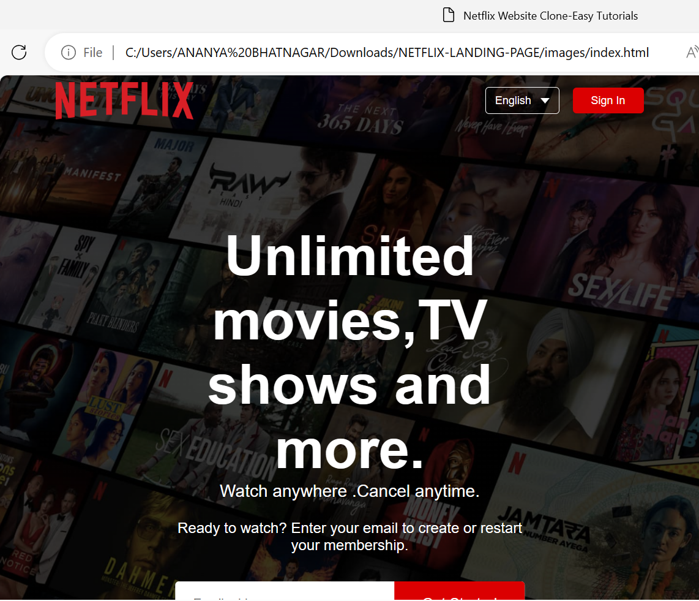
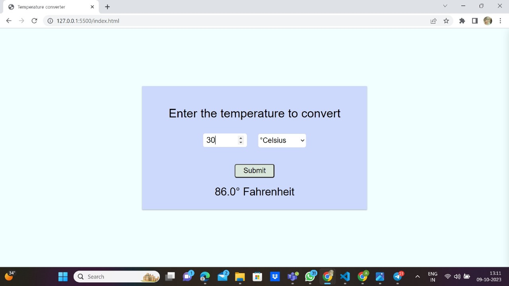

About Me
Web Developer with a passion for learning and enhancing skills, particularly in front-end development and Java. I am eager to take on new challenges and contribute to a team of innovative developers.
WEB DEVELOPER ,FRONTEND DEVELOPER
Web Developer with a passion for learning and enhancing skills, particularly in front-end development and Java. I am eager to take on new challenges and contribute to a team of innovative developers.

The objective of this project is to design and develop a computer simulation program that accurately models and visualizes the illumination patterns produced by various lighting configurations within a home environment. The simulation should enable users to virtually experiment with different lighting arrangements and assess their impact on the overall lighting quality and ambiance of their homes.

The goal of this project is to design and develop a new homepage for Netflix, the world's leading streaming entertainment service. The new homepage should be visually appealing, easy to use, and provide a personalized experience for each user.
A distance measurement system (DMS) is a device or system that measures the distance between two or more points. DMSs are used in a wide variety of applications, including surveying, navigation, robotics,and autonomous vehicles.

The goal of this project is to develop a temperature converter website that can convert between Celsius, Fahrenheit, and Kelvin. The website should be easy to use, visually appealing, and provide accurate results.
